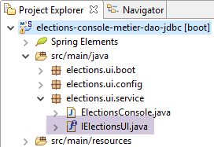
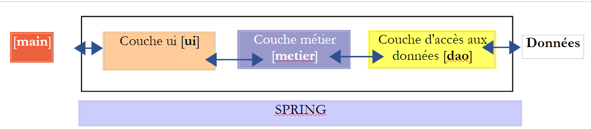
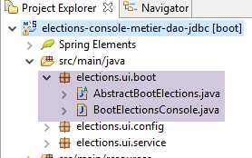

9. [TD]: تنفيذ طبقة [ui] باستخدام برنامج وحدة التحكم
الكلمات المفتاحية: بنية متعددة الطبقات، Spring، حقن التبعية.
 |
9.1. الدعم
 |
في [1]، يحتوي المجلد [support / chap-09] على مشروع Eclipse الخاص بطبقة [UI] لتطبيق وحدة التحكم.
9.2. تكوين Maven
يتم تكوين مشروع Eclipse [elections-ui-metier-dao-jdbc] بواسطة ملف Maven [pom.xml] التالي:
<project xmlns="http://maven.apache.org/POM/4.0.0" xmlns:xsi="http://www.w3.org/2001/XMLSchema-instance"
xsi:schemaLocation="http://maven.apache.org/POM/4.0.0 http://maven.apache.org/xsd/maven-4.0.0.xsd">
<modelVersion>4.0.0</modelVersion>
<groupId>istia.st.elections</groupId>
<artifactId>elections-ui-metier-dao-jdbc</artifactId>
<version>0.0.1-SNAPSHOT</version>
<name>elections-ui-metier-dao-jdbc</name>
<parent>
<groupId>org.springframework.boot</groupId>
<artifactId>spring-boot-starter-parent</artifactId>
<version>1.2.7.RELEASE</version>
</parent>
<properties>
<project.build.sourceEncoding>UTF-8</project.build.sourceEncoding>
<java.version>1.8</java.version>
</properties>
<dependencies>
<!-- business -->
<dependency>
<groupId>istia.st.elections</groupId>
<artifactId>elections-metier-dao-jdbc</artifactId>
<version>0.0.1-SNAPSHOT</version>
</dependency>
<!-- Spring Boot -->
<dependency>
<groupId>org.springframework.boot</groupId>
<artifactId>spring-boot</artifactId>
<scope>test</scope>
</dependency>
<!-- Spring Boot Test -->
<dependency>
<groupId>org.springframework.boot</groupId>
<artifactId>spring-boot-starter-test</artifactId>
<scope>test</scope>
</dependency>
</dependencies>
<!-- plugins -->
<build>
<plugins>
<plugin>
<artifactId>maven-assembly-plugin</artifactId>
<configuration>
<archive>
<manifest>
<mainClass>config.AppConfig</mainClass>
</manifest>
</archive>
<descriptorRefs>
<descriptorRef>jar-with-dependencies</descriptorRef>
</descriptorRefs>
</configuration>
</plugin>
<!-- to install the project artifact in the local Maven repository -->
<plugin>
<groupId>org.apache.maven.plugins</groupId>
<artifactId>maven-surefire-plugin</artifactId>
<version>2.18.1</version>
</plugin>
</plugins>
</build>
</project>
- الأسطر 22–26: نقوم باستيراد أرشيف طبقة [business] وبالتالي أرشيف طبقة [DAO]؛
9.3. تكوين Spring
 |
تقوم فئة [UiConfig] بتكوين تطبيق Spring:
package elections.ui.config;
import org.springframework.context.annotation.ComponentScan;
import org.springframework.context.annotation.Import;
import elections.metier.config.MetierConfig;
@Import(MetierConfig.class)
@ComponentScan(basePackages = { "elections.ui.service" })
public class UiConfig {
}
- السطر 8: نقوم باستيراد الفاصوليا المحددة في طبقة [business]. وقد استوردت هذه الطبقة بالفعل الفاصوليا المحددة في طبقة [DAO]. وبالتالي، يمكننا هنا الوصول إلى الفاصوليا من الطبقات الثلاث جميعها؛
- السطر 9: تحتوي حزمة [elections.ui.service] على مكونات أخرى؛
9.4. واجهة طبقة [UI]
 |
لفهم الشكل الذي قد تبدو عليه واجهة Java لطبقة [UI]، نحتاج إلى معرفة من سيستخدم هذه الواجهة. إنه ليس المستخدم الموضح في الرسم البياني أعلاه، بل البرنامج الذي سيقوم بتشغيل التطبيق ككل.
 |
يتم تقديم واجهة [IElectionsUI] إلى البرنامج الرئيسي [main]، الذي سيقوم بتشغيل التطبيق. ما الذي يمكن أن يطلبه [main] من طبقة [UI]؟ يمكنه أن يطلب منها بدء التفاعلات مع المستخدم الذي سيقوم بإدخال بيانات الانتخابات المفقودة. سنعتمد الواجهة البسيطة التالية:
package istia.st.elections.ui;
public interface IElectionsUI {
/**
* lance le dialogue avec l'utilisateur
*/
public void run();
}
- السطر 7: تحتوي الواجهة على طريقة واحدة فقط: run. من خلال استدعاء هذه الطريقة، نوجه طبقة [ui] لبدء التفاعل مع المستخدم.
9.5. نقطة دخول التطبيق
 |
فئة بدء تشغيل التطبيق هي فئة Java تحتوي على طريقة [main] ثابتة. يجب أن تقوم هذه الطريقة بإنشاء مثيلات لطبقات [ui، business، demo] وتوجيه طبقة [ui] لبدء التفاعل مع المستخدم. يمكن أن تكون هذه الفئة هي فئة [AbstractBootElections] التالية:
package elections.ui.boot;
import org.springframework.context.annotation.AnnotationConfigApplicationContext;
import elections.dao.entities.ElectionsException;
import elections.ui.config.UiConfig;
import elections.ui.service.IElectionsUI;
public abstract class AbstractBootElections {
// spring context retrieval
protected AnnotationConfigApplicationContext ctx;
public void run() {
// instantiation layer [ui]
IElectionsUI electionsUI = null;
try {
// spring context retrieval
ctx = new AnnotationConfigApplicationContext(UiConfig.class);
// ui] layer recovery
electionsUI = getUI();
} catch (RuntimeException ex) {
// we report the error
afficheExceptions("Les erreurs suivantes se sont produites :", ex);
// stop the application
System.exit(1);
}
// execution layer [ui]
try {
electionsUI.run();
} catch (ElectionsException ex2) {
// we report the error
afficheExceptions("Les erreurs suivantes se sont produites :", ex2);
// stop the application
System.exit(3);
} catch (RuntimeException ex1) {
// we report the error
afficheExceptions("Les erreurs suivantes se sont produites :", ex1);
// stop the application
System.exit(2);
}
}
protected abstract IElectionsUI getUI();
private void afficheExceptions(String message, ElectionsException ex) {
// the message
System.out.println(String.format("%s -------------", message));
System.out.println(String.format("Code erreur : %d", ex.getCode()));
// errors are displayed
for (String erreur : ex.getErreurs()) {
System.out.println(String.format("-- %s", erreur));
}
}
public void afficheExceptions(String message, Exception ex) {
// the message
System.out.println(String.format("%s -------------", message));
// display the exception stack
Throwable cause = ex;
while (cause != null) {
System.out.println(String.format("-- %s", cause.getMessage()));
cause = cause.getCause();
}
}
}
- السطر 19: يتم إنشاء مثيل لسياق Spring: سيتم إنشاء جميع الفاصوليا المحددة في ملفات التكوين المختلفة؛
- السطر 21: نسترد مرجعًا إلى المكون الذي ينفذ واجهة [IElectionsUI]. سننفذ واجهة [IElectionsUI] باستخدام مكونين:
- [ElectionsConsole] لتطبيق وحدة التحكم؛
- [ElectionsSwing] لتطبيق Swing؛
طريقة [getUI] هي طريقة مجردة (السطر 44). في الواقع، ستكون فئة [AbstractBootElections] هي الفئة الأم لفئتين:
- [BootElectionsConsole]، التي ستوفر bean [ElectionsConsole] لفئتها الأم؛
- [BootElectionsSwing]، التي ستوفر bean [ElectionsSwing] لفئتها الأم؛
- السطر 30: يتم تنفيذ طريقة [run] للواجهة؛
تتم معالجة الاستثناءات في عدة أماكن:
- الأسطر 22–27: قد يحدث استثناء أثناء إنشاء مثيل لسياق Spring؛
- الأسطر 31–41: قد يحدث استثناء أثناء تنفيذ طبقة [UI]. هناك نوعان من الاستثناءات:
- فئة [ElectionsException] التي تطلقها طبقة [DAO]؛
- فئة [RuntimeException] للاستثناءات الأخرى التي قد تحدث أثناء التنفيذ؛
فئة [BootElectionsConsole] هي الفئة التي تطلق تنفيذ وحدة التحكم. وفيما يلي كودها:
package elections.ui.boot;
import elections.ui.service.IElectionsUI;
public class BootElectionsConsole extends AbstractBootElections{
public static void main(String[] arguments) {
new BootElectionsConsole().run();
}
@Override
protected IElectionsUI getUI() {
return ctx.getBean("electionsConsole",IElectionsUI.class);
}
}
- السطر 5: تمتد فئة [BootElectionsConsole] من فئة [AbstractBootElections]. ولذلك يجب أن تنفذ طريقة [getUI] التي أعلنتها فئتها الأم على أنها مجردة؛
- الأسطر 10-13: تنفيذ طريقة [getUI]؛
- السطر 12: تم إنشاء الفاصوليا المسماة [electionsConsole] لتنفيذ واجهة [IElectionsUI]. [ctx] هو سياق Spring المحدد في الفئة الأصلية من خلال الإعلان:
// spring context retrieval
protected AnnotationConfigApplicationContext ctx;
نظرًا لأن الحقل يحتوي على السمة [protected]، فإنه يكون مرئيًا في الفئات الفرعية.
سيتم إعلان الفاصوليا في السطر 12 على النحو التالي:
@Component
public class ElectionsConsole implements IElectionsUI {
الاسم الافتراضي لهذا الفول هو اسم الفئة مع الحرف الأول صغيرًا. يمكنك تجاوز هذا الاسم الافتراضي عن طريق الكتابة صراحةً:
قد تكون فئة [BootElectionsSwing] التي ستطلق تطبيق Swing كما يلي:
package elections.ui.boot;
import elections.ui.service.IElectionsUI;
public class BootElectionsSwing extends AbstractBootElections {
public static void main(String[] arguments) {
new BootElectionsSwing().run();
}
@Override
protected IElectionsUI getUI() {
return ctx.getBean("electionsSwing", IElectionsUI.class);
}
}
يُطلق على نمط التصميم هذا، الذي يتم فيه تجميع السلوك المشترك بين الفئات في فئة أصلية، وترك الفئات الفرعية لتنفيذ تفاصيلها الخاصة، اسم نمط تصميم الاستراتيجية. يفرض نمط التصميم هذا سلوكًا مشتركًا على جميع الفئات الفرعية.
9.6. فئة التنفيذ [ElectionsConsole]
 |
ستكون فئة التنفيذ الأولى لطبقة [ui] فئة تستخدم وحدة التحكم للتواصل مع المستخدم. فيما يلي مثال على مربع حوار معروض على وحدة التحكم في Eclipse:
Il y a 7 listes en compétition. Veuillez indiquer le nombre de voix de chacune d'elles :
Nombre de voix de la liste [A] : 2500
Nombre de voix de la liste [B] : 4500
Nombre de voix de la liste [C] : x
Nombre de voix incorrect. Veuillez recommencer
Nombre de voix de la liste [C] : 8000
Nombre de voix de la liste [D] : 12000
Nombre de voix de la liste [E] : 16000
Nombre de voix de la liste [F] : 25000
Nombre de voix de la liste [G] : 32000
Résultats de l'élection
[G,32000,2,false]
[F,25000,2,false]
[E,16000,1,false]
[D,12000,1,false]
[C,8000,0,false]
[B,4500,0,true]
[A,2500,0,true]
يمكن أن يكون للطبقة [ElectionsConsole] الهيكل التالي:
package elections.ui.service;
import java.util.Comparator;
import java.util.Scanner;
import org.springframework.beans.factory.annotation.Autowired;
import org.springframework.stereotype.Component;
import elections.dao.entities.ListeElectorale;
import elections.metier.service.IElectionsMetier;
@Component
public class ElectionsConsole implements IElectionsUI {
@Autowired
private IElectionsMetier electionsMetier;
@Override
public void run() {
// data entry
try (Scanner clavier = new Scanner(System.in)) {
// lists in competition are requested from the [metier] layer
// we enter the votes
}
// we calculate the number of seats
// we record the results
// lists sorted in descending order of votes
// we display them
}
// electoral list comparison class
class CompareListesElectorales implements Comparator<ListeElectorale> {
// comparison of two candidate lists by number of votes
@Override
public int compare(ListeElectorale listeElectorale1, ListeElectorale listeElectorale2) {
// we compare the votes of these two lists
int nbVoix1 = listeElectorale1.getVoix();
int nbVoix2 = listeElectorale2.getVoix();
if (nbVoix1 < nbVoix2) {
return +1;
} else {
if (nbVoix1 > nbVoix2)
return -1;
else
return 0;
}
}
}
}
- السطر 12: فئة [ElectionsConsole] هي مكون Spring؛
- السطر 13: تنفذ الفئة واجهة [IElectionsUI]
- السطران 15-16: يقوم Spring بحقن مرجع في طبقة [business]؛
- السطور 18–34: طريقة [run] لواجهة [IelectionsUI]؛
يُسمى كتلة try في الأسطر 21–28 try-with-resources، وصيغتها كما يلي:
يجب أن ينفذ المورد في السطر 1 واجهة [java.lang.AutoCloseable]. يتم فتح المورد في السطر 1 ويتم إغلاقه تلقائيًا بعد السطر 3، بغض النظر عما إذا حدث استثناء في الكود الذي يتم تنفيذه بين السطرين. تضمن هذه الصيغة إغلاق المورد المفتوح، مهما حدث.
المهمة: اكتب الكود الخاص بالطريقة [run]. استخدم التعليقات كدليل.